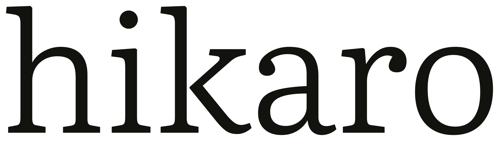
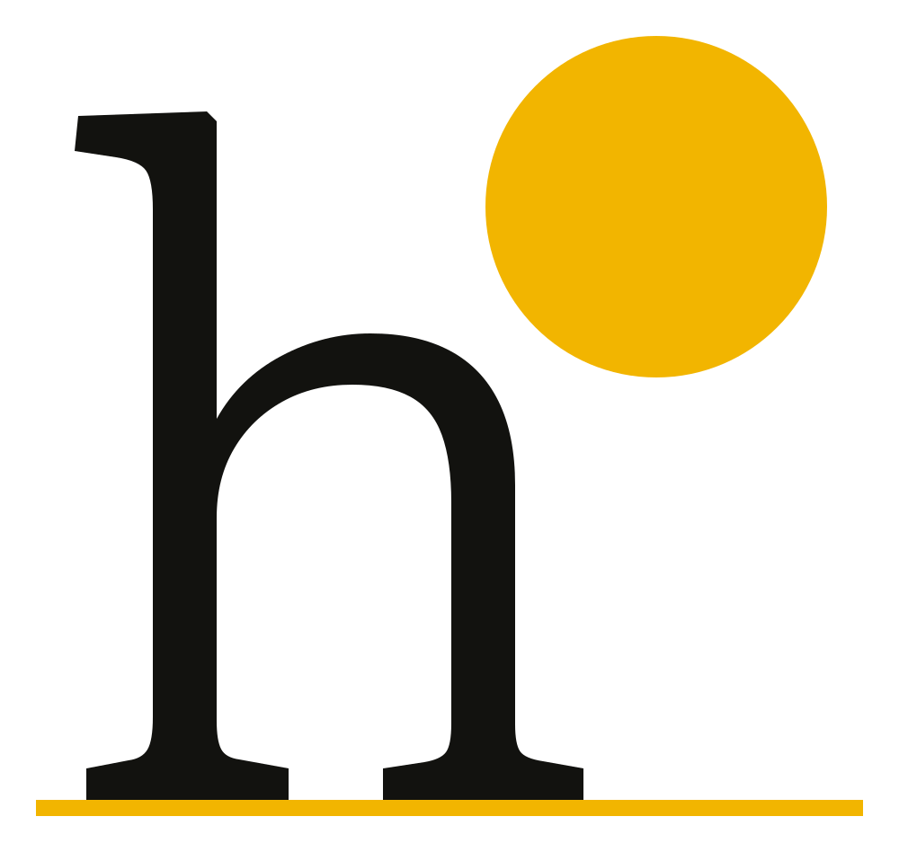
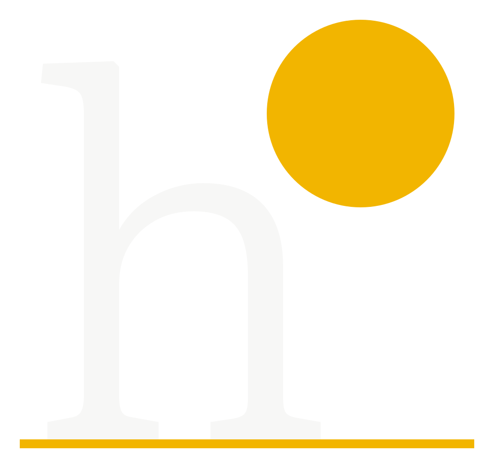
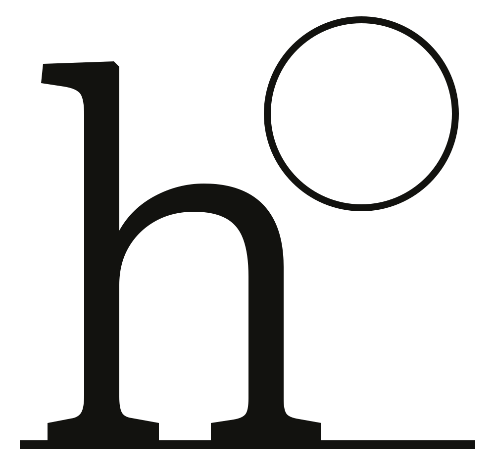
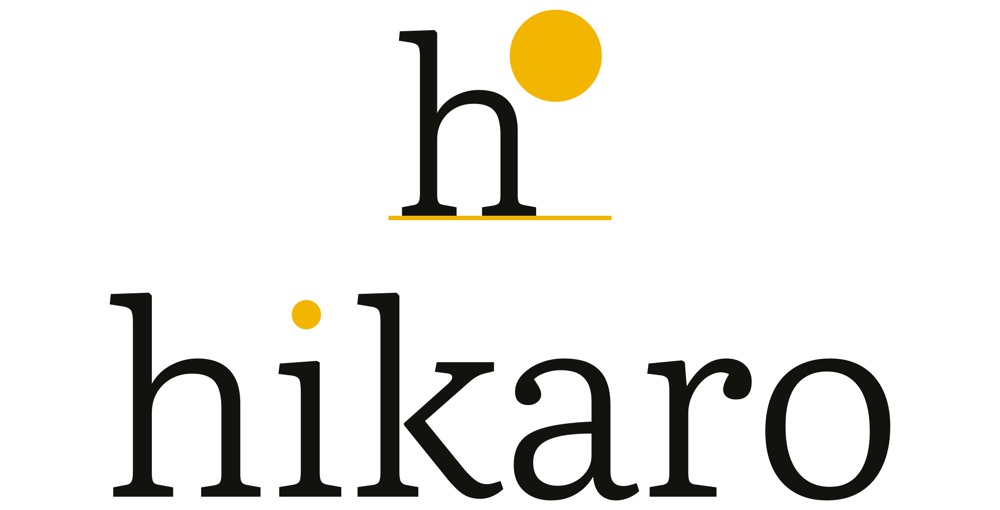

Light at work.
hikaro is an independent coding agent for the terminal. It reads the real project, makes the change, and stops where your decision begins.
A room, a sun,
a horizon.
The h is the room. The sun is a circle, not a square. One line holds the horizon. Nothing is added to the letter; the light is a body behind it, and the overlap is the picture.
The light is not inside the letter.
It is behind it.
- Form
- Literata Light h
- Sun
- circle, r 190 / 1000
- Horizon
- one line, 18 / 1000
- Icon
- 824 / 1024

The wordmark

An icon at every size.
An icon, not a tile. 824 of 1024, 100 px of air, one continuous corner.
At 16 px the h and sun stay; the horizon becomes a single line. The rounded square is the app icon canvas, not the logo.




Clear space is one sun. Minimum mark: 16 px. Minimum wordmark: 160 px wide. Below that, use the mark.
Beam is a field,
not a glow.
One saturated yellow carries the sun and the horizon. It is never set as small text on paper; the ink does that work. No gradients, no glow — a flat plane and one circle.
Ink on Beam 10.2:1 · Paper on Ink 17.5:1 · Ink on Paper 17.5:1

Independent TypeScript coding agent. Fullscreen TUI and bidirectional Pi integration.
pnpm start --demoREADME header